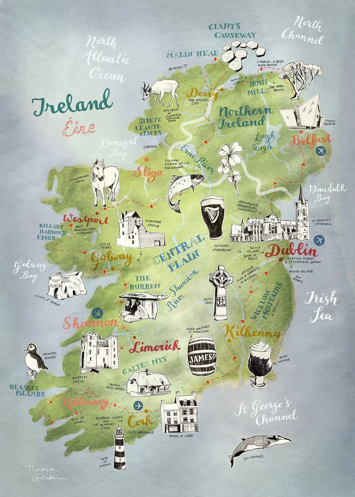
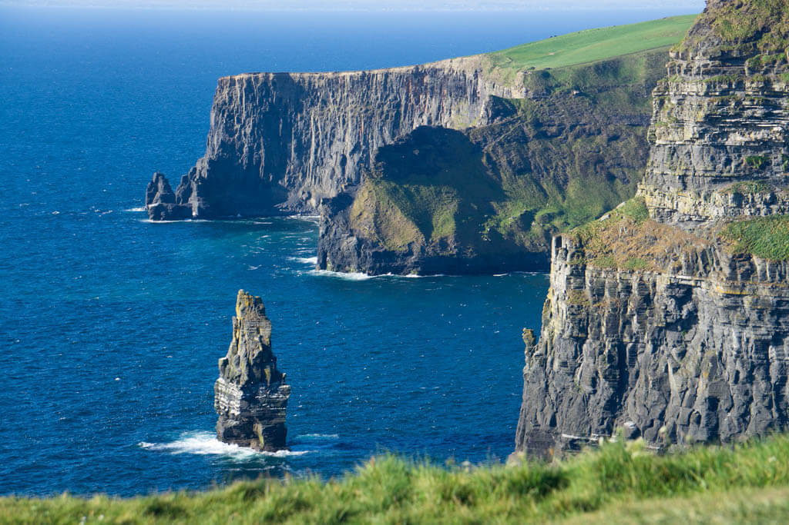

Ireland is a beautiful country known for its green landscapes, friendly people, and rich history.
Ireland is famous for castles, music, and breathtaking scenery. Dublin is the capital city, while Galway is well known for its traditional culture.
Many visitors enjoy exploring the countryside, historic towns, coastal cliffs, and Irish festivals.


Popular Irish News Website: Irish Times
| Capital | Population |
|---|---|
| Dublin | About 5.3 Million |
"Ireland is often called the Emerald Isle because of its green landscape."